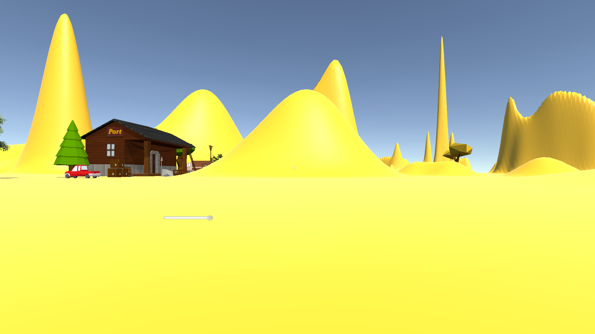

🚀 Welcome to XLAND Hub 6.1
XLAND Hub 6.1 is here!
After the improvements introduced in previous versions, XLAND Hub continues evolving with a stronger focus on software distribution, dedicated product pages and showcasing upcoming XLAND projects.
Version 6.1 introduces new ways for visitors to discover XLAND software, learn about available applications and follow the development of upcoming games.
This release is not just about changing the appearance of the website. It is about expanding the way XLAND presents and distributes its own projects.
🔥 What's New in XLAND Hub 6.1
XLAND Hub 6.1 focuses on expanding the ecosystem and making XLAND projects easier to discover.
🚀 XLAND Hub 6.1 Highlights
- 📦 New XLAND Downloads software library
- 📄 JSON-based software catalog using downloads.json
- 🔎 Software search functionality
- 🖥️ Windows and Linux platform filtering
- 🏷️ Software version and release status information
- 📥 Direct software download links
- 📶 Dedicated XLAND WiFi Manager page
- 🎮 New XLAND Open World game showcase
- 📅 Open World target release year: 2027
- 🎨 Continued XLAND visual identity improvements
- 📱 Responsive page improvements
- 🌐 Expanded XLAND project presentation
📦 Introducing XLAND Downloads
One of the main additions in XLAND Hub 6.1 is XLAND Downloads — an official software library for applications developed by XLAND.
The new page provides a central location where visitors can explore available XLAND applications, view their information and access their download files.
The library is designed specifically for XLAND-developed software rather than acting as a general third-party software directory.
📦 XLAND Downloads Features
- 📚 Official XLAND software library
- 🔎 Search through available applications
- 🖥️ Windows platform filter
- 🐧 Linux platform filter
- 🏷️ Alpha, Beta and Stable release labels
- 🔢 Software version information
- 📏 Download size information
- 📥 Direct download links
- 🖼️ Application icons and descriptions
- 📄 Central product information through downloads.json
The software catalog uses a separate JSON file named
downloads.json. This makes it possible to
organize product information independently from the
main page structure.
New XLAND applications can be added to the catalog by creating product entries with their descriptions, versions, supported platforms and download locations.
📶 XLAND WiFi Manager Gets Its Own Page
XLAND Hub 6.1 introduces a dedicated page for XLAND WiFi Manager.
The new page gives the application its own presentation space, allowing visitors to learn about its purpose, features and supported platforms before downloading it.
XLAND WiFi Manager is designed as a wireless network management and monitoring application.
📶 XLAND WiFi Manager
- 📡 Wireless network information
- 📊 Signal strength monitoring
- 📈 Network quality monitoring
- 🖥️ Adapter information
- ⚡ Dedicated application page
- 📥 Windows download information
- 🐧 Linux download information
The dedicated product page provides a clearer overview of the application and separates its information from the main XLAND Hub homepage.
XLAND WiFi Manager is currently presented as an Alpha 0.3 release in the XLAND Downloads library.
🎮 Introducing the XLAND Open World Game Page
XLAND Hub 6.1 also introduces a dedicated showcase page for the upcoming XLAND Open World game project.
The page presents the game's direction, planned features and development progress through a dedicated gaming-focused experience.
The project is being developed with the goal of creating an open-world experience featuring a large environment, vehicles, city activity and interactive gameplay systems.
🌎 Open World Project Highlights
- 🌆 Open-world environment
- 🚗 Vehicle gameplay
- 🚦 Dynamic city traffic concept
- 🌤️ Dynamic weather concept
- 🌅 Day and night cycle
- 👥 Living world and NPC concepts
- 🎯 Missions and exploration
- 🎮 Dedicated game presentation page
The game is currently in development. The planned target release year is 2027. A specific release date and final system requirements have not yet been announced.
🛠️ A New Place for Game Development Updates
The new game page gives the XLAND Open World project a dedicated location inside the XLAND ecosystem.
As development continues, the page can be used to present future announcements, gameplay information, screenshots and other official project updates.
🎮 Development Information
- 🚧 Project status: In Development
- 📅 Target release year: 2027
- 🎥 Official trailer: To Be Announced
- 📸 Gameplay screenshots: To Be Announced
- 💻 System requirements: To Be Announced
- 📥 Game download: Not Yet Available
🌐 More Dedicated Project Pages
XLAND Hub 6.1 continues the move toward giving individual XLAND projects their own dedicated pages.
Instead of placing every detail on a single page, individual pages can provide more focused information about specific applications, services and games.
🌐 XLAND Hub 6.1 Page Expansion
- 🏠 XLAND Hub homepage
- 📶 XLAND WiFi Manager page
- 📦 XLAND Downloads library
- 🎮 XLAND Open World game page
- 📰 XLAND News
- 🛠️ XLAND Support
- 🛒 XLAND Shop
📄 A More Organized Software Catalog
The introduction of downloads.json gives the XLAND Downloads page a separate data source.
Product information is stored independently from the HTML page. This helps keep the software catalog organized as more XLAND applications are developed.
📄 downloads.json
- 📦 Product names and descriptions
- 🔢 Version information
- 🏷️ Release status
- 🖥️ Supported platforms
- 📥 Download file locations
- 🖼️ Application icon locations
- 📏 Software size information
This structure provides a foundation for expanding the software library without having to manually rewrite the entire product layout for every new app.
💎 XLAND Visual Identity
XLAND Hub 6.1 continues using the visual identity developed throughout previous XLAND Hub releases.
The pages continue using dark backgrounds, neon accents, modern layouts and responsive components to maintain a consistent experience across the Hub.
✨ XLAND Design Language
- 🖤 Dark interface
- 🟢 Neon green accents
- 💎 Glass-style elements
- ✨ Modern visual effects
- ⚡ Smooth interactions
- 📱 Responsive layouts
- 🎨 Consistent XLAND branding
🖥️ Platform and Software Distribution
The XLAND Downloads library introduces platform information directly into the software catalog.
Visitors can identify which applications provide Windows or Linux downloads and explore the available files through the product cards.
🖥️ Supported Download Platforms
- 🪟 Windows
- 🐧 Linux
Platform availability depends on each individual application. Additional platform support may be introduced as XLAND software development continues.
🛡️ Security and Reliability
XLAND Hub 6.1 continues building on the security foundations introduced in previous releases.
The new software library also makes it important to keep product information and download locations organized and accurate.
🛡️ Important Principles
- 🔐 Keep private credentials out of public frontend files
- 🖥️ Keep sensitive server-side operations on the backend
- 📄 Maintain valid product catalog data
- 🔗 Use trusted download locations
- 🧹 Validate user-provided data
- 📦 Keep software versions clearly identified
As with previous versions, frontend protections are additional safeguards and do not replace proper server-side security.
🌎 The XLAND Ecosystem Continues
XLAND Hub 6.1 is an expansion of the existing ecosystem, not a replacement for everything that came before it.
Existing XLAND projects and services remain part of the wider XLAND vision while new applications, pages and experiences are developed.
🌎 XLAND Ecosystem
- 🤖 XLAND AI
- 🤖 XLAND AI Copilot
- 🎮 XLAND Games
- 👻 Endless Road Horror 3D
- 🌎 XLAND Map
- 🎬 XLAND Video
- 📰 XLAND News
- 🛠️ XLAND Support
- 💻 XLAND Developer Tools
- 🌐 XLAND API
- 📜 XLAND Script
- 🛒 XLAND Shop
- 📶 XLAND WiFi Manager
- 📦 XLAND Downloads
- 🎮 XLAND Open World
🚀 From XLAND Hub 5.0 to 6.1
XLAND Hub continues evolving through every major release, with each version building on the work of previous releases.
📈 XLAND Hub Evolution
- 🚀 XLAND Hub 5.0 — Major ecosystem expansion
- 🤖 XLAND Hub 5.1 — XLAND AI integration and News improvements
- 📱 XLAND Hub 5.2 — Copilot, mobile improvements and Script redesign
- 🛡️ XLAND Hub 5.3 — Security improvements and redesigned comment experience
- 🚀 XLAND Hub 6.1 — XLAND Downloads, dedicated WiFi Manager page and Open World game showcase
Version 6.1 represents another step in the evolution of the XLAND platform, expanding the ways visitors can discover and follow XLAND projects.
🔮 What's Next?
XLAND Hub 6.1 provides a stronger foundation for presenting future XLAND software and projects.
Development across the ecosystem will continue, with future improvements depending on the progress of individual XLAND projects.
🚀 The Road Ahead
- 📦 More XLAND-developed applications
- 🔄 More software library updates
- 🎮 Continued Open World game development
- 📸 Future game previews and screenshots
- 🌐 More dedicated project pages
- 🛠️ Further developer tools
- 🤖 Continued XLAND AI development
- ✨ More improvements across the ecosystem
🎉 XLAND Hub 6.1 Is Here
XLAND Hub 6.1 marks an important step in the continued development of the XLAND ecosystem.
With the introduction of XLAND Downloads, a dedicated XLAND WiFi Manager page and a new showcase for the upcoming Open World game, the Hub is expanding beyond its original website experience.
From software discovery to game development, XLAND Hub 6.1 brings more of the XLAND ecosystem together in one place.

📸 Gallery



📰 Related News
👤 Written by
XLAND Team
Official developers of the XLAND ecosystem.
💬 Comments (0)